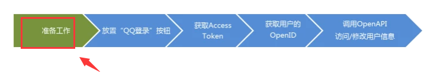
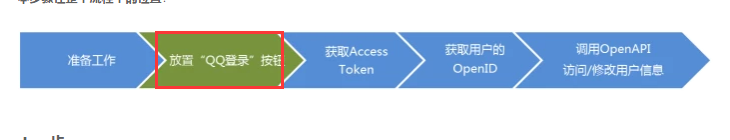
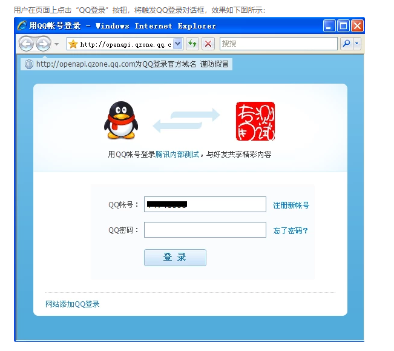
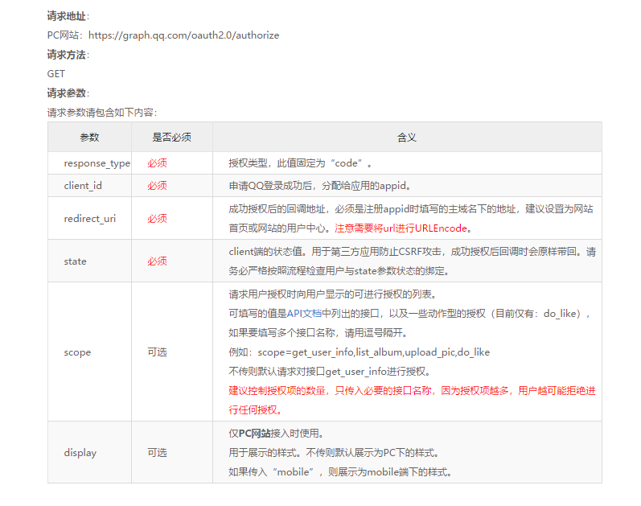
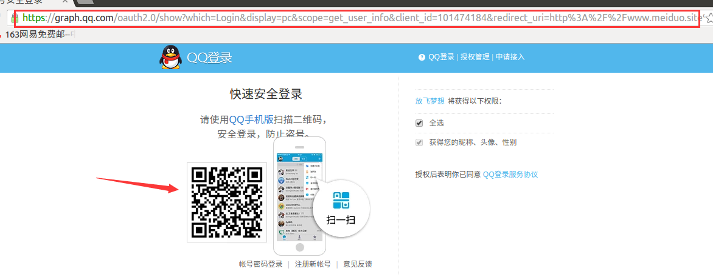

1. 返回QQ登录网址的视图
后端接口设计：
请求方式： GET /oauth/qq/statues/
返回数据：
| 返回值 | 类型 | 说明 |
|---|---|---|
| auth_url | str | qq登录网址 |

在配置文件中添加关于QQ的id信息
# QQ登录参数
QQ_APP_ID = '101474184'
QQ_APP_KEY = 'c6ce949e04e12ecc909ae6a8b09b637c'
QQ_REDIRECT_URL = 'http://www.meiduo.site:8080/oauth_callback.html'

前端
修改login.html文件
<div class="third_party">
<a @click="qq_login" class="qq_login">QQ</a>
<a href="#" class="weixin_login">微信</a>
<a href="/register.html" class="register_btn">立即注册</a>
</div>
修改login.js，在methods中增加qq_login方法
// qq登录
qq_login: function(){
var state = this.get_query_string('next') || '/';
axios.get(this.host + '/oauth/qq/statues/?state=' + state, {
responseType: 'json'
})
.then(response => {
location.href = response.data.auth_url;
})
.catch(error => {
console.log(error.response.data);
})
}
后端

实现url的接口文档

在oauth/views.py中实现视图
请求方式：GET /oauth/qq/statues/
from rest_framework.views import APIView
from mall import settings
from urllib.parse import urlencode,parse_qs
from urllib.request import urlopen
from rest_framework.response import Response
# Create your views here.
class QQAuthURLView(APIView):
"""
实现出现QQ授权登录视图
GET /oauth/qq/statues/
"""
def get(self,request):
# 生成auth_url
# https://graph.qq.com/oauth2.0/authorize
# 请求参数请包含如下内容：
# response_type 必须 授权类型，此值固定为“code”。
# client_id 必须 申请QQ登录成功后，分配给应用的appid。
# redirect_uri 必须 成功授权后的回调地址，必须是注册appid时填写的主域名下的地址，建议设置为网站首页或网站的用户中心。注意需要将url进行URLEncode。
# state 必须 client端的状态值。用于第三方应用防止CSRF攻击，成功授权后回调时会原样带回。请务必严格按照流程检查用户与state参数状态的绑定。
# scope 可选 scope=get_user_info
#获取state
state = request.query_params.get('state')
#设置base_url,注意添加 ?
base_url = 'https://graph.qq.com/oauth2.0/authorize?'
#组织参数
params = {
'response_type':'code',
'client_id':settings.QQ_APP_ID,
'redirect_uri':settings.QQ_REDIRECT_URL,
'state':state,
'scope':'get_user_info',
}
#对参数进行urlencode,然后拼接url
auth_url = base_url + urlencode(params)
#返回响应
return Response({'auth_url':auth_url})
指定设置url,在oauth应用中新建urls.py
from django.conf.urls import url
from . import views
urlpatterns = [
# /oauth/qq/statues/
url(r'^qq/statues/$',views.QQAuthURLView.as_view(),name='statues'),
]
在工程的url中,进行配置
from django.conf.urls import url,include
from django.contrib import admin
urlpatterns = [
url(r'^admin/', admin.site.urls),
url(r'^users/',include('users.urls',namespace='users')),
url(r'^verifications/',include('verifications.urls',namespace='verifications')),
url(r'^oauth/',include('oauth.urls',namespace='oauth')),
]

抽取代码
在oauth包中新建一个utils文件,创建QQ登录辅助工具类OauthQQ类
#coding:utf8
from mall import settings
from urllib.parse import urlencode,parse_qs
from urllib.request import urlopen
class OauthQQ(object):
"""
QQ授权工具类
"""
def __init__(self,client_id=None,redirect_uri=None):
self.client_id = client_id or settings.QQ_APP_ID
self.redirect_uri = redirect_uri or settings.QQ_REDIRECT_URL
def get_oauth_url(self,state):
# 生成auth_url
# https://graph.qq.com/oauth2.0/authorize
# 请求参数请包含如下内容：
# response_type 必须 授权类型，此值固定为“code”。
# client_id 必须 申请QQ登录成功后，分配给应用的appid。
# redirect_uri 必须 成功授权后的回调地址，必须是注册appid时填写的主域名下的地址，建议设置为网站首页或网站的用户中心。注意需要将url进行URLEncode。
# state 必须 client端的状态值。用于第三方应用防止CSRF攻击，成功授权后回调时会原样带回。请务必严格按照流程检查用户与state参数状态的绑定。
# scope 可选 scope=get_user_info
# 设置base_url,注意添加 ?
base_url = 'https://graph.qq.com/oauth2.0/authorize?'
# 组织参数
params = {
'response_type': 'code',
'client_id': self.client_id,
'redirect_uri': self.redirect_uri,
'state': state,
'scope': 'get_user_info',
}
# 对参数进行urlencode,然后拼接url
auth_url = base_url + urlencode(params)
return auth_url
视图修改的代码如下:
from rest_framework.views import APIView
from rest_framework.response import Response
from .utils import OauthQQ
# Create your views here.
class QQAuthURLView(APIView):
"""
实现出现QQ授权登录视图
GET /oauth/qq/statues/
"""
def get(self,request):
# 获取state
state = request.query_params.get('state')
qq = OauthQQ()
auth_url = qq.get_oauth_url(state)
#返回响应
return Response({'auth_url':auth_url})
测试一切正常